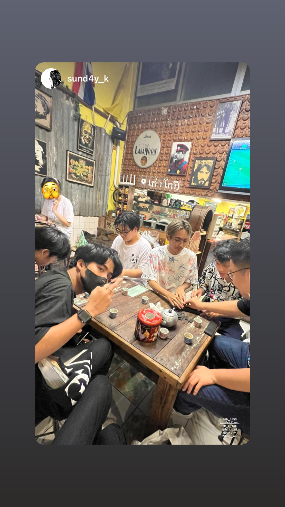

Buy Outfits
02.10.22
วันนี้ผมมาซื้อเสื้อผ้าที่ตลาดสวนจตุจักรผมมาถึงกันประมาณสองโมงตลาดที่นี่มีของขายเยอะมากทั้งของกินทั้งเสื้อผ้าราคาก็ไม่แพงแต่วันนั้นผมดันต้องสอบอังกฤษก็เลยต้องนั่งทำก่อนแล้วฝากเพื่อนซื้อข้าวกระเพราะมาให้เพราะหิวมากหลังจากกินกันเสร็จก็เดินไปหาซื้อเสื้อผ้าร้านแรกผมได้ซื้อมาสองตัวเป็นลายอนิเมะแบบยุคเก่าเพื่อนอีกคนก็ซื้อมาด้วย1ตัวพอมาถึงอีกร้านนึงผมสะดุดตากับเสื้อตัวนึงเป็นรูปแมวผมเลยซื้อมาอีกตัวนึงหลังตากซื้อพวกเราก็ถ่ายรูปเล่นกันซักพักรู้สึกหิวน้ำเลยพากันไปซื้อน้ำปั่นให้หายคอแห้งพอเริ่มดึงก็ไปหาเสื้อผ้าที่ตึกแดงต่อแต่ผมไม่ได้ซื้ออะไรพอกลับจากจตุจักรพวกเราไปนั่งเล่นกันต่อที่ร้านเก่าโกปีแถวมอเรานี่เองพอกินกันเสร็จก็แยกย้ายกันกลับบ้าน
